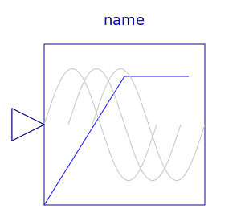
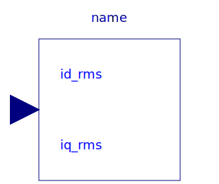
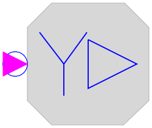
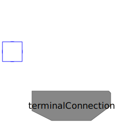
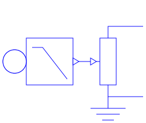

| Name | Description |
|---|---|
| Parameter records | |
|  VfController | Voltage-Frequency-Controller |
| Current controller | |
|  VoltageController | Voltage controller |
|  SwitchYD | Y-D-switch |
|  TerminalBox | Terminal box Y/D-connection |
| Rheostat which is shortened after a given time | |
|  RampedRheostat | Rheostat with linearly decreasing resistance |
|
|
Computes machine parameter from usual datasheet |
| Calculates Impedances from nominal values |